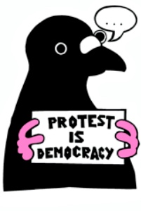
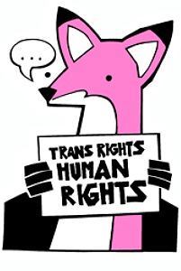

This is a personal website. It has some reviews, some of my zines and some art.
It will grow to contain stuff I would like to share. It is under construction and always will be.
Good news, everyone! The entire site is now handled by 11ty. This means easier updates and opportunities for a different kind of site mapping. Why not follow me on Neocities: KNONK
Zines
Zines I made that you can read in full right here:
2026-01: Choose Horror and Hysteria A weird little horror zine I made at a collage event.
Some collage zines from 2018 (still fresh)
I Kissed a Girl and I liked it: Thoughts from a Bad Bisexual A zine about the joys and sorrows of being bisexual.
Scarred Defiant for Life: Recovering from Sexual Violence A zine with thoughts about living with a history of sexual violence, from the perspective of many years after.
Beauty Beyond the Binary: The Style and Fashion Magazine for Non-Human Beings A parody zine about beauty as a product sold through magazines.
Printables
2026-01: Month Review (pdf) A mini zine to help you review your month and make plans for the next one.
 Movies 2025
I wrote up a detailed review of 2025 in terms of the films I watched, loved, hated. Check it out.
Some things KNONK cares about:
- zines
- street art
- cinema
- books
- Trans fucking rights!
- visual art
- nature conservation
- rejecting the attention economy
- journalling